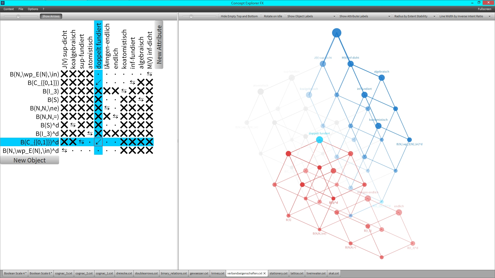

Introduction
Concept Explorer FX is a partial reimplementation of the well-known FCA-Tool Concept Explorer with focus on user interaction and graph view. Changes in the formal context will immediately be reflected in the concept lattice, due to the integrated iFox algorithm, that was introduced and proven in my diploma thesis . Concept lattice layouts are generated by a genetic algorithm with lattice-specific evolutionary operators. Formal contexts can be created from scratch, imported from the local file system (Burmeister, ConExp and ConExpFX Format) or constructed from SPARQL queries (evaluated against XML endpoints, Sesame repositories, local or remote ontologies).
Please also note the other interesting Concept Explorer reimplementations Concept Explorer CLJ (conexp-clj) from Daniel Borchmann and Concept Explorer NG (conexp-ng) from Robert Jäschke and his students Eugen Kiss, David Bormann and Jan F.K. Further FCA software is listed on Uta Priss’ homepage .

Features
Most time-consuming algorithms use parallel threads to shorten computation time.
Please note that currently not all features are available from the graphical user interface and from the command line interface.
Formal Concept Analysis
- Data model for handling formal contexts
- Algorithms for computing concept lattices:
- set of all formal concepts (NextClosure and NextClosures),
- and its neighborhood relation (iPred)
- Algorithm for computing attribute-incremental changes in concept lattices (iFox)
- A genetic algorithm for computing additive diagrams of concept lattices (using conflict distance and chain decompositions)
- Algorithms for computing (constrained) implicational bases (NextClosure, NextClosures and ConstrainedNextClosures)
- GUI components for editing formal contexts and their concept lattices
- Importer for various formats (CEX, CFX, CSV, CXT, SPARQL)
- Exporter for various formats (CFX, CXT, HTML, PDF, PNG, SVG, TeX)
- GUI supports LaTeX expressions in formal context objects and attributes
Description Logics
- Data model for handling interpretations
- Algorithms for computing model-based most-specific concept descriptions (in EL and ALQ)
- Algorithms for computing bases of general concept inclusions for finite interpretations (in EL and ALQ), also relative to a background ontology
- Interacts with Sesame, OWL API, ELK and HermiT
- Import of RDF data
- Export of OWL ontologies
- Basic support for exporting LaTeX
Requirements
- Java 8 (developed and tested with latest Oracle JDK)